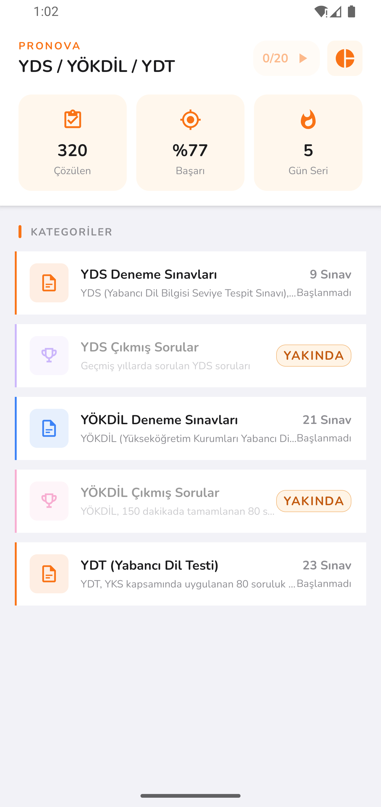
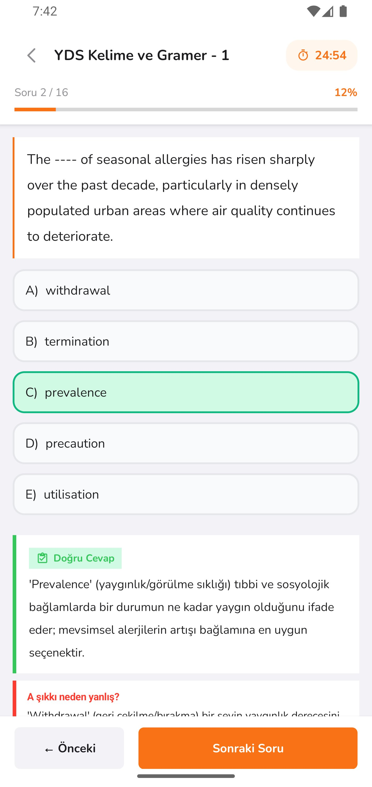
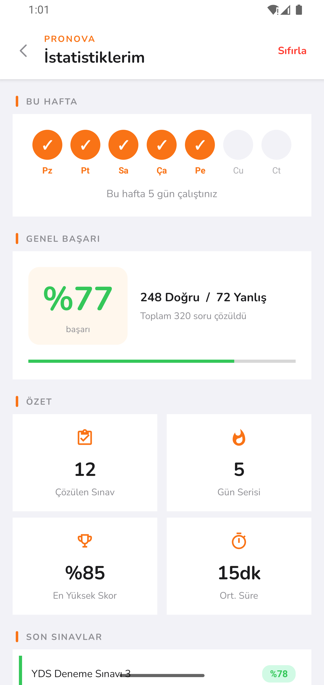
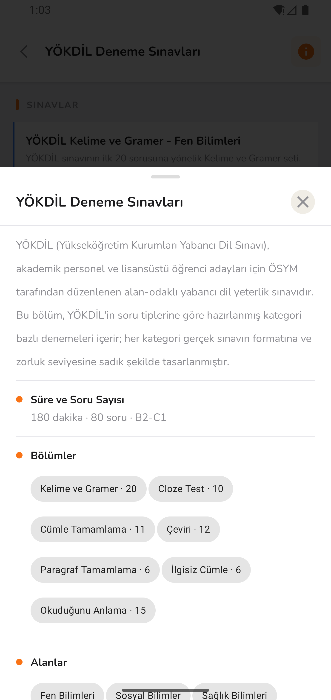
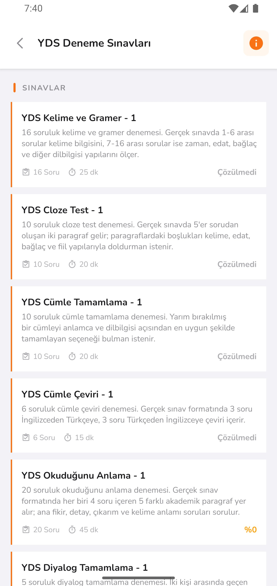

YDS Deneme Sınavları
Yabancı Dil Bilgisi Seviye Tespit Sınavı için ÖSYM formatına sadık kategori bazlı denemeler. Her bölüm gerçek sınavın zorluk seviyesine uygun.
9Sınav
80Soru
180dkSüre
Pronova; kategori bazlı denemeler, her sorunun ardından gelen detaylı çözümler ve gerçek zamanlı ilerleme takibi ile seni gerçek sınav formatında çalıştırır. Hazırlığını dağınık kaynaklardan değil, tek bir yerden yönet.

Her sınavın kendine has formatı, soru tipi ve ritmi var. Pronova bu farkları gözeterek, her sınava özel hazırlanmış denemeleri tek bir yerde sunar.
Yabancı Dil Bilgisi Seviye Tespit Sınavı için ÖSYM formatına sadık kategori bazlı denemeler. Her bölüm gerçek sınavın zorluk seviyesine uygun.
Yükseköğretim Kurumları Yabancı Dil Sınavı için akademik içerikli, alana özel hazırlanmış denemeler. Sosyal, fen ve sağlık alanlarına özel içerik.
YKS kapsamında uygulanan 80 soruluk yabancı dil testi için hazırlanmış denemeler. Dil bölümü adayları için kritik hazırlık kaynağı.
Pronova'nın temel felsefesi basit: yalnızca soru çözmek yetmez, neyi neden yanlış yaptığını bilmek gerekir. Her özellik bu ilke etrafında tasarlandı.
Doğru cevap neden doğru? Diğer şıklar neden eleniyor? Pronova, her sorunun arkasındaki mantığı Türkçe açıklamalarla, kelime anlamları ve dilbilgisi notlarıyla birlikte sunar.

Bu hafta kaç gün çalıştın? Genel başarın ne durumda? En yüksek skorun hangi denemede geldi? Pronova'nın istatistik paneli sana net bir tablo sunar — motivasyon için seri sayacı dahil.

Tüm denemeyi çözmek zorunda değilsin. Sadece zayıf olduğun bölümü — Cloze Test, Cümle Tamamlama, Çeviri ya da Okuduğunu Anlama — seçip o alana odaklanabilirsin. Her bölüm gerçek sınavdaki süre ve soru sayısını birebir korur.

YDS, YÖKDİL ve YDT'de yer alan tüm soru tipleri için ayrı ayrı denemeler. Her tip için gerçek sınavın soru sayısı ve süresi korunur.
16 soruluk deneme. Kelime bilgisi, zaman, edat, bağlaç ve diğer dilbilgisi yapıları.
İki paragraflık metinlerde boşluk doldurma. Kelime, edat, bağlaç ve fiil yapıları.
Yarım bırakılmış cümleyi anlamca ve dilbilgisi açısından en uygun şekilde tamamlama.
İngilizce'den Türkçe'ye ve Türkçe'den İngilizce'ye karşılıklı çeviri pratiği.
5 farklı akademik paragraf üzerinden ana fikir, detay, çıkarım ve kelime anlamı soruları.
İki kişi arasında geçen diyalogda eksik kalan ifadeyi en uygun şekilde tamamlama.
Verilen bir cümleyi anlamı bozulmadan farklı bir yapıyla yeniden ifade etme.
Eksik bir cümlesi olan paragraf için anlam bütünlüğüne uygun cümleyi seçme.
Bir paragrafın anlam akışını bozan cümleyi tespit etme becerisini ölçer.
Liste, detay, soru, çözüm, istatistik — Pronova'nın tüm kritik ekranları sade ve hızlı bir akış için tasarlandı.

Pronova'yı bugün indir, ilk denemeni 5 dakika içinde çözmeye başla.